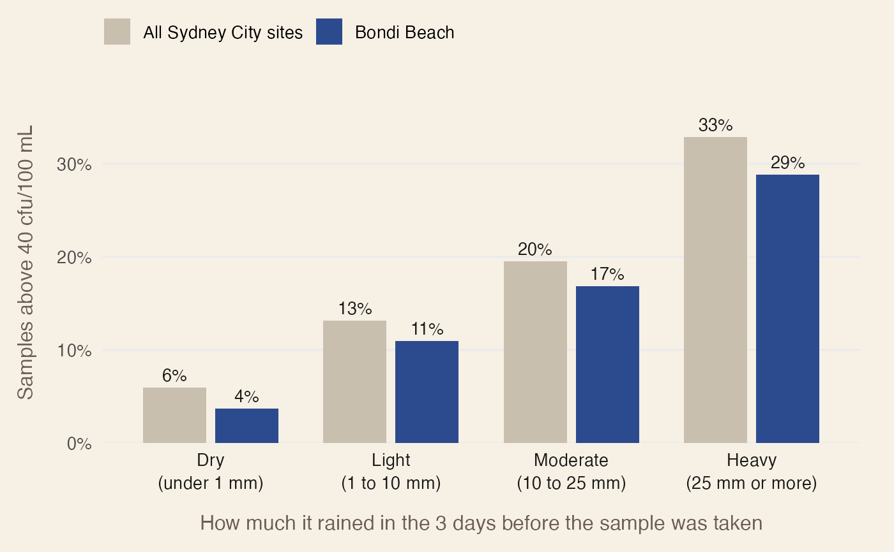

Plot the share of unsafe samples in each rainfall band
Source:R/plot_exceedance.R
plot_exceedance.RdDraws the output of summarise_exceedance() as a bar chart. A second
summary, such as every beach in the same region, can be drawn in a muted
beige-grey as context so the user can see whether their beach is better or
worse than its surroundings. Bands with too few samples are drawn faded.
Usage
plot_exceedance(
selection,
context,
selection_label = "Your beach",
context_label = "All beaches in region",
threshold = 40
)Arguments
- selection
Output of
summarise_exceedance()for the beach of interest, drawn in blue.- context
Output of
summarise_exceedance()for a comparison group, drawn in a muted beige-grey.- selection_label, context_label
Legend labels for the two groups.
- threshold
The threshold used in the summaries, shown on the y-axis label.
Examples
bondi <- beach_samples[beach_samples$swim_site == "Bondi Beach", ]
city <- beach_samples[beach_samples$region == "Sydney City", ]
plot_exceedance(
summarise_exceedance(bondi),
summarise_exceedance(city),
selection_label = "Bondi Beach",
context_label = "All Sydney City sites"
)
